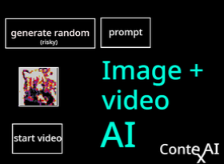
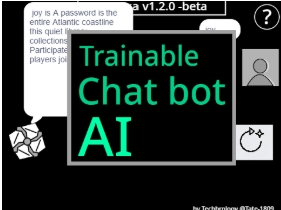

go to https://scratch.mit.edu/users/Tate-1809/ to see many AIs made by techbrology in scratch!

This is the image generator

AI chatbot from "I made an AI and I can't even code"
A neural network text generator made in Scratch.